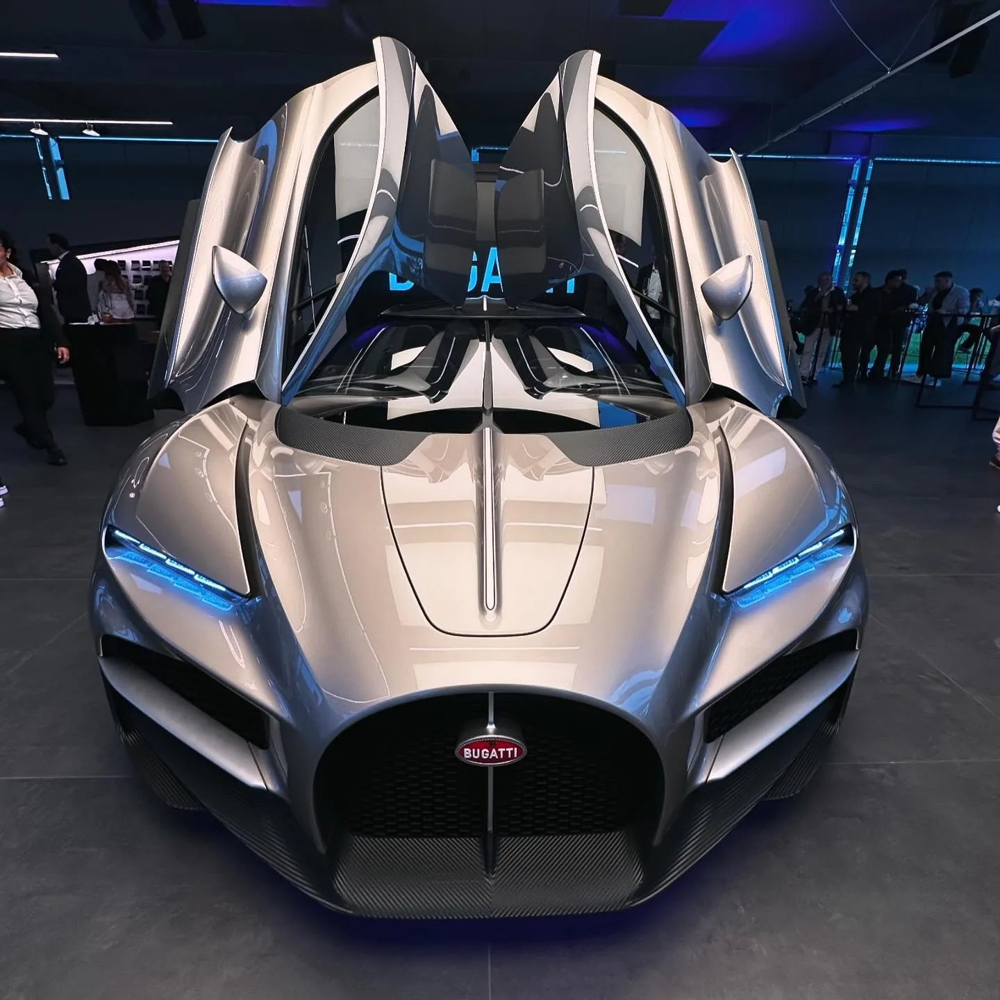
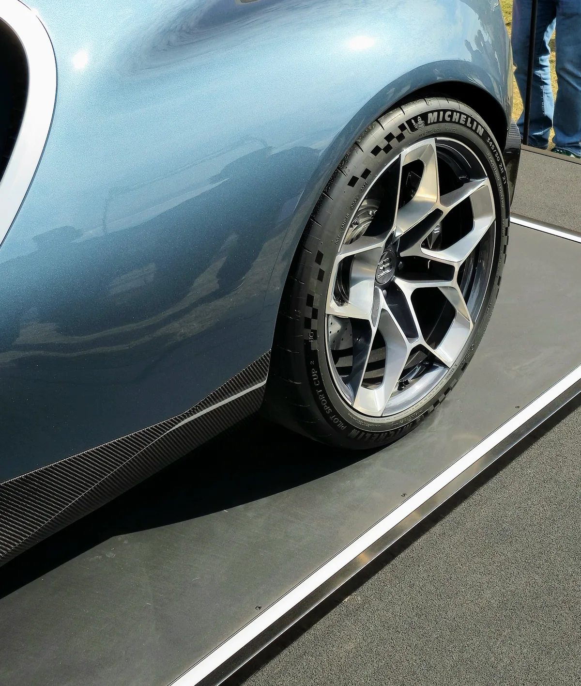
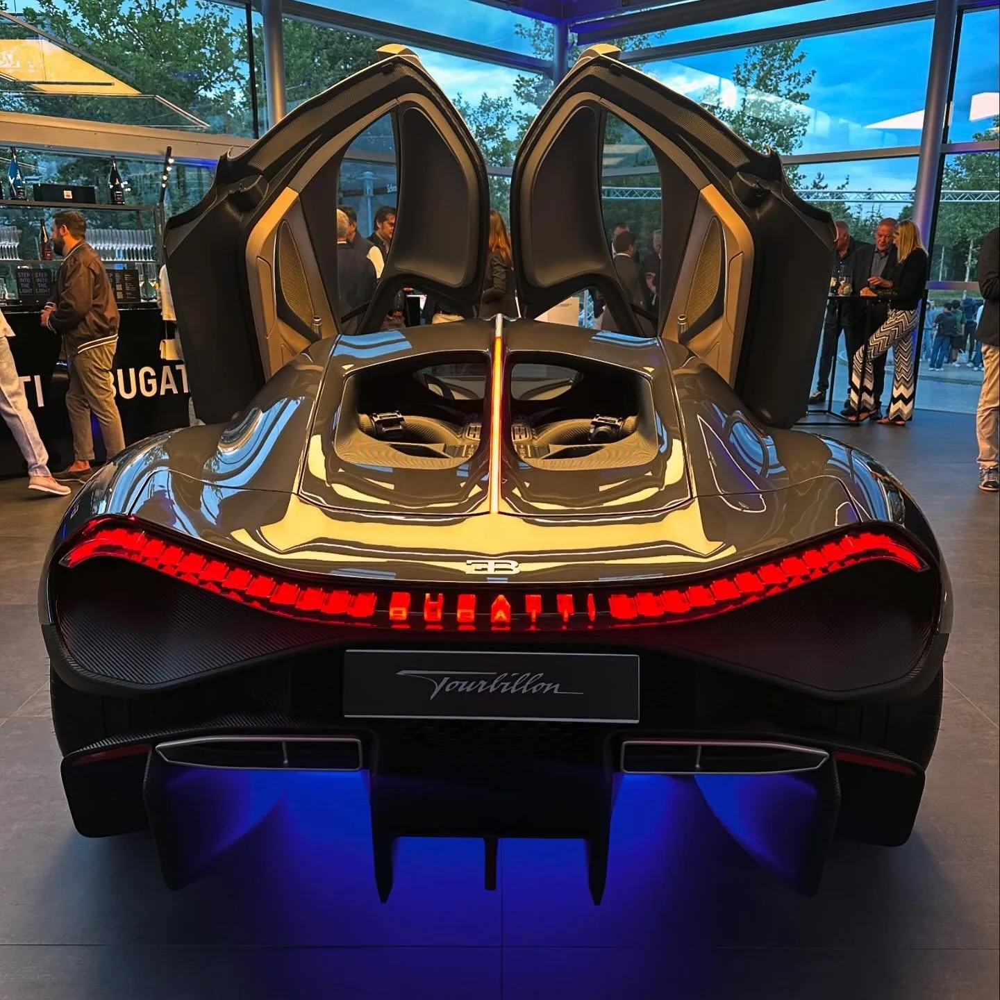
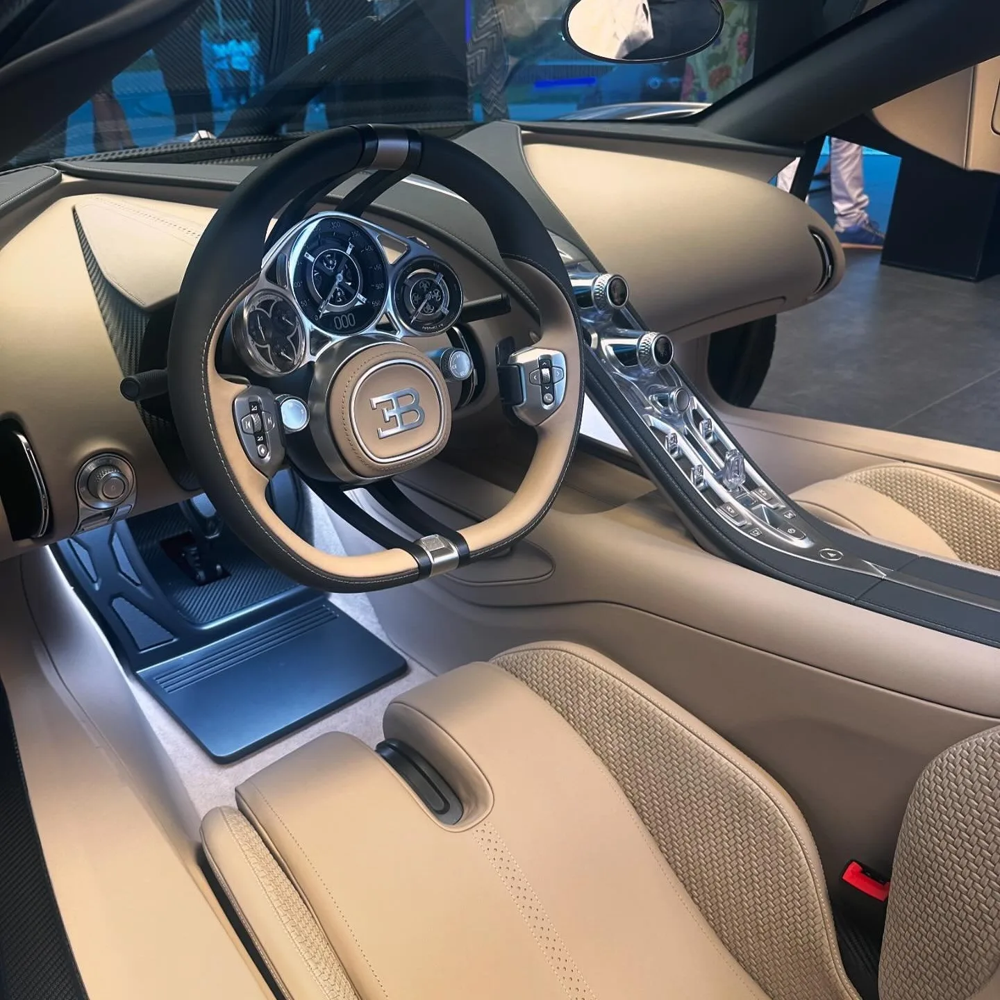
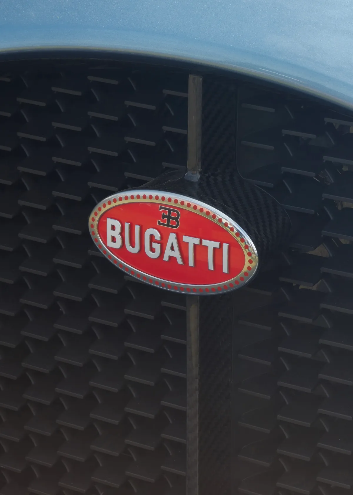
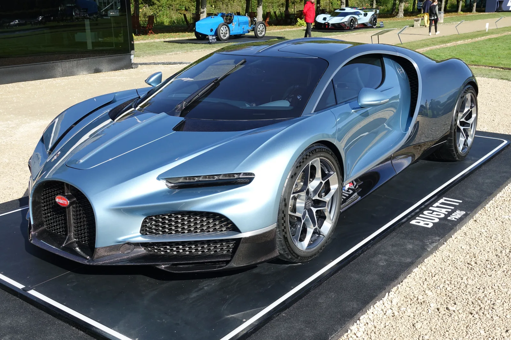

▲ 2024년 공개된 부가티 투르비옹. 시론의 후속으로 8.3리터 V16 엔진과 전기모터 3기를 결합한 1800마력 하이퍼카다 ⓒ Sokrates 399, Wikimedia Commons (CC BY-SA 4.0)
엔진 하나로는 부족했다. 부가티는 아예 전기모터 3개를 더 얹었다.
부가티가 2024년 6월 공개한 '투르비옹(Tourbillon)'은 단종된 시론(Chiron)의 후속 모델이다. 콥스워스(Cosworth)와 공동 개발한 8.3리터 자연흡기 V16 엔진에 전기모터 3기를 더한 플러그인 하이브리드 파워트레인을 얹어 합산 1800마력을 낸다. 순수 전기차 전환이 대세인 하이퍼카 시장에서, 부가티는 오히려 '자연흡기 엔진의 감성'과 '전기모터의 순간 반응성'을 동시에 잡는 길을 택했다. 250대 한정 생산에 2026년 현재 고객 인도가 시작된 이 차의 실제 스펙을 부가티 공식 발표와 해외 매체 보도를 교차 검증해 정리했다.
1. V16 자연흡기 엔진 + 전기모터 3기, 어떻게 1800마력을 내나
투르비옹의 심장은 콥스워스와 공동 개발한 8.3리터 자연흡기 V16 엔진이다. 터보차저 없이 9000rpm까지 회전하며 자체적으로 1000마력을 낸다. 무게는 단 252kg에 불과해, 배기량과 실린더 수를 감안하면 이례적으로 가볍다. 여기에 전기모터 3기가 더해져 전기 파워트레인만으로 800마력을 추가한다. 앞차축에 각각 335마력을 내는 모터 2기가, 뒷차축에는 시동·발전·순간 토크 보강을 겸하는 335마력급 모터 1기가 배치되는 구조다. 앞바퀴는 전기모터로만 구동되며, 엔진의 동력은 뒷바퀴로만 전달된다.
| 항목 | 내용 |
|---|---|
| 엔진 | 8.3L 자연흡기 V16, 9000rpm 레드라인, 콥스워스 공동 개발(1000마력) |
| 전기모터 | 3기(전륜 2기+후륜 1기), 후륜 모터는 24,000rpm까지 회전(합산 800마력) |
| 합산 출력 | 1800마력(PS 기준, 약 1775bhp) |
| 합산 토크 | 약 2300Nm(1696lb-ft) |
| 변속기 | 신형 8단 듀얼클러치, 4륜구동 + 토크 벡터링 |
부가티는 엔진 개발 과정을 담은 영상을 공식 뉴스룸에서 공개했는데, 마테 리막 부가티 CEO가 직접 하이브리드 시스템 통합 과정을 설명한다. 관련 발표 바로가기

▲ 투르비옹의 앞바퀴와 브레이크 디테일. 휠 안쪽으로 대구경 디스크와 탄소섬유 사이드실이 드러난다 ⓒ Calreyn88, Wikimedia Commons (CC BY-SA 4.0)

▲ 부가티 투르비옹 후면부. 도어를 열면 뒤쪽 엔진룸 대신 앞뒤로 배치된 좌석 구조가 먼저 눈에 띈다 ⓒ Sokrates 399, Wikimedia Commons (CC BY-SA 4.0)
2. 25kWh 배터리로 순수 전기 주행 60km — 짧지만 의미 있는 숫자
투르비옹은 800V 시스템의 25kWh(정확히는 24.8kWh) 배터리를 센터터널에 오일 냉각 방식으로 탑재했다. 순수 전기차와 비교하면 작은 용량이지만, 이 배터리 덕분에 시내 주행 등 저속 구간에서는 엔진 개입 없이 전기모터만으로 60km 이상 주행할 수 있다. 부가티는 이 전기 주행 모드를 활용해 유럽 주요 도시의 저공해 구역(LEZ)을 무배출로 통과할 수 있다는 점도 강조했다.
📍 배터리 개발에는 리막 테크놀로지가 참여했다
마테 리막 CEO가 이끄는 리막 테크놀로지는 투르비옹의 배터리와 전기 파워트레인 통합 과정에 기술 지원을 제공한 것으로 알려졌다. 800V 아키텍처와 오일 냉각 배터리 설계는 리막이 자사 전기 하이퍼카 '네베라'에서 쌓은 노하우와 맞닿아 있다.
3. 0-100km/h 2.0초, 최고속도 445km/h — 숫자로 보는 가속력
V16 엔진과 전기모터가 동시에 개입하는 구간에서 투르비옹의 가속력은 압도적이다. 부가티가 공식 발표한 수치에 따르면 정지 상태에서 시속 100km까지 2.0초, 200km/h까지는 5초 이내, 300km/h까지는 10초 이내, 400km/h까지는 25초 이내에 도달한다. 최고속도는 일반 모드에서 전자적으로 380km/h로 제한되며, 별도의 물리 키인 '스피드키'를 꽂아 최고속도 모드로 전환하면 제한 속도가 445km/h까지 올라간다.
| 구간 | 기록 |
|---|---|
| 0-100km/h | 2.0초 |
| 0-200km/h | 5초 이내 |
| 0-300km/h | 10초 이내 |
| 0-400km/h | 25초 이내 |
| 최고속도(일반 모드) | 380km/h(전자 제한) |
| 최고속도(스피드키 적용 시) | 445km/h |
✅ 시론과 비교하면 얼마나 빨라졌나
· 이전 세대 시론 슈퍼 스포트(1600마력, 콰트로터보 W16)는 최고속도 440km/h로 알려졌다. 투르비옹은 자연흡기 엔진 기반임에도 스피드키 적용 시 이를 넘어서는 445km/h를 낸다
· 0-100km/h 가속은 시론의 2.4초 안팎에서 투르비옹은 2.0초로 더 빨라졌다
· 투르비옹의 공차중량은 1995kg으로 공식 확인됐다. V16 엔진에 배터리·전기모터 3기까지 더해졌음에도 시론과 비슷한 수준의 무게를 유지한 셈이다

▲ 투르비옹이라는 이름은 이 아날로그 계기판에서 따왔다. 스위스 시계의 '투르비옹' 무브먼트처럼 정교하게 조립된 다이얼이 특징이다 ⓒ Sokrates 399, Wikimedia Commons (CC BY-SA 4.0)
4. 가격 380만 유로, 250대 한정 — 2026년 인도 시작
투르비옹의 시작 가격은 세전 380만 유로(약 410만 달러, 원화 약 61억원 상당)다. 전 세계 생산 대수는 250대로 한정되며, 공개 당시 이미 상당수가 완판된 것으로 알려졌다. 생산은 프랑스 몰스하임의 부가티 아틀리에에서 전량 수작업으로 이뤄지며, 고객 인도는 2026년부터 순차적으로 진행되고 있다.
실제로 2026년 8월, 몰스하임 공장을 떠난 초기 양산분 중 한 대가 미국 캘리포니아 비버리힐스의 한 호텔에서 고객에게 인도되는 장면이 공개되며 화제를 모았다. 해외 매체는 이 차량이 "공장을 떠난 최초의 투르비옹 중 한 대"라고 전했다. 수작업 생산 특성상 연간 인도 대수는 한 자릿수 수준에 그칠 것으로 전망되며, 250대 전량 인도까지는 수년이 소요될 것으로 보인다.
| 항목 | 내용 |
|---|---|
| 시작가 | 380만 유로(세전, 약 410만 달러) |
| 생산 대수 | 전 세계 250대 한정 |
| 생산지 | 프랑스 몰스하임 부가티 아틀리에(수작업) |
| 인도 시점 | 2026년부터 순차 인도 |
부가티 공식 모델 페이지에서 투르비옹의 상세 사양과 구매 관련 정보를 확인할 수 있다. 부가티 공식 홈페이지 바로가기
5. 순수 전기 하이퍼카 시대에, 부가티는 왜 자연흡기 V16을 고집했나
리막-부가티 합병 이후 마테 리막 CEO가 밝힌 방향은 명확했다. "배출가스 규제를 통과하되, 부가티다운 엔진 감성은 포기하지 않는다"는 것이다. 순수 전기 하이퍼카는 즉각적인 토크와 압도적인 가속력을 내지만, 부가티가 100년 넘게 쌓아온 브랜드 정체성인 '엔진 사운드와 기계적 감성'을 구현하기 어렵다는 판단이 작용했다. 그 결과가 자연흡기 V16 엔진에 전기모터를 더해 규제는 통과하면서도 엔진 본연의 감성은 살리는 하이브리드 구조다.
투르비옹이라는 이름 자체도 이런 철학을 담고 있다. 스위스 시계에서 정밀 부품이 서로 맞물려 돌아가는 '투르비옹' 무브먼트에서 따온 이름으로, 실제로 계기판 디자인도 기계식 시계처럼 여러 다이얼이 겹쳐 돌아가는 구조로 제작됐다. 차체 디자인 역시 이전 세대인 시론·베이론보다 한층 슬림해진 캐빈과 버터플라이 도어를 적용해, 부가티 최초의 1인승 콘셉트카 '아틀란틱'에서 영감을 받은 라인을 재해석했다는 평가를 받는다.

▲ 투르비옹 전면 그릴의 부가티 엠블럼. 말발굽 모양 그릴과 탄소섬유 프레임이 브랜드 정체성을 이어간다 ⓒ Calreyn88, Wikimedia Commons (CC BY-SA 4.0)

▲ 2024년 샹티이 아르 에 엘레강스 행사에 전시된 부가티 투르비옹. 뒤로 부가티의 클래식 레이스카와 콘셉트카가 함께 전시돼 있다 ⓒ Y.Leclercq, Wikimedia Commons (CC BY-SA 4.0)
6. 요약
부가티 투르비옹은 8.3리터 자연흡기 V16 엔진(1000마력)에 전기모터 3기(800마력)를 더해 합산 1800마력을 내는 플러그인 하이브리드 하이퍼카다. 콥스워스와 공동 개발한 엔진은 9000rpm까지 회전하며, 25kWh 800V 배터리로 60km 이상 순수 전기 주행도 가능하다.
0-100km/h 가속은 2.0초, 최고속도는 스피드키 적용 시 445km/h에 달한다. 시론의 후속으로 250대 한정 생산되며, 시작 가격은 세전 380만 유로다. 2026년 현재 프랑스 몰스하임 아틀리에에서 전량 수작업으로 제작돼 고객에게 순차 인도되고 있다.
순수 전기 하이퍼카가 대세인 시장에서 부가티는 자연흡기 엔진의 감성을 지키는 길을 택했다. 전동화 규제는 하이브리드 구조로 통과하면서도, 부가티 고유의 엔진 사운드와 기계적 정교함이라는 정체성은 그대로 이어간 셈이다.